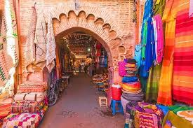

MES PAGES HTML:
Marrakech, située au pied des montagnes de l’Atlas, est une ville vibrante reconnue pour ses couleurs chaudes, son architecture mauresque et son atmosphère envoûtante. Cœur historique du Maroc, elle séduit par ses souks animés, la médina classée à l’UNESCO, ses jardins luxuriants et la célèbre place Jemaa el-Fna, où traditions et modernité se rencontrent. Climat ensoleillé, artisanat raffiné et cuisine parfumée en font une destination incontournable pour une immersion culturelle unique.
Savais-tu que?
Marrakech possède une géographie variée, avec des montagnes de l'Atlas à proximité (comme le Toubkal), l'océan Atlantique à environ 150 km et des zones désertiques accessibles, le tout sur un relief plat. La ville est divisée entre sa médina historique et les quartiers modernes, et elle est célèbre pour sa palmeraie luxuriante et le fleuve Tensift qui traverse ses environs.
Médina de Marrakech |
|
|  | La Médina de Marrakech, inscrite au patrimoine mondial de l’UNESCO depuis 1985, est un vaste labyrinthe historique d’environ 600 hectares, datant du XIIe siècle. Elle se caratérise par une architecture unique avec ses maisons traditionnelles autour de patios (riads), ses ruelles étroites et ses souks animés où prospèrent artisans et commerçants. La médina est un vivant témoignage de l’urbanisme médiéval islamique, avec des monuments emblématiques comme la mosquée de la Koutoubia, la Kasbah, les tombeaux saâdiens, et des palais prestigieux. |
Le jardin Majorelle |
|
| Le jardin Majorelle est un jardin botanique célèbre pour son bleu intense appelé "bleu Majorelle" et sa végétation exotique, autrefois propriété du couturier Yves Saint Laurent. C'est un havre de paix au cœur de la ville avec aussi le Musée Berbère à proximité. |
Le palais El Badi |
|
| Construit entre 1578 et 1594 par le sultan saadien Ahmed al-Mansur, le Palais El Badi symbolise la grandeur et la richesse de la dynastie saadienne. Il comptait à son apogée 360 pièces richement décorées avec du marbre italien, des feuilles d’or et des mosaïques de Fès. Aujourd’hui en ruines, il conserve une immense cour intérieure avec des bassins, jardins et vestiges de pavillons royaux. Le site comme tel, offre des vues panoramiques sur Marrakech. |
Medersa Ben Youssef |
|
| Cette ancienne école coranique, fondée au XIVe siècle et reconstruite au XVIe siècle, est réputée pour sa décoration raffinée avec des mosaïques zellige, bois sculpté et stucs ciselés. Elle servait de lieu d’enseignement religieux et de résidence pour les étudiants. Située au cœur de la médina, la Médrassa Ben Youssef est un joyau architectural du style arabo-andalou. |